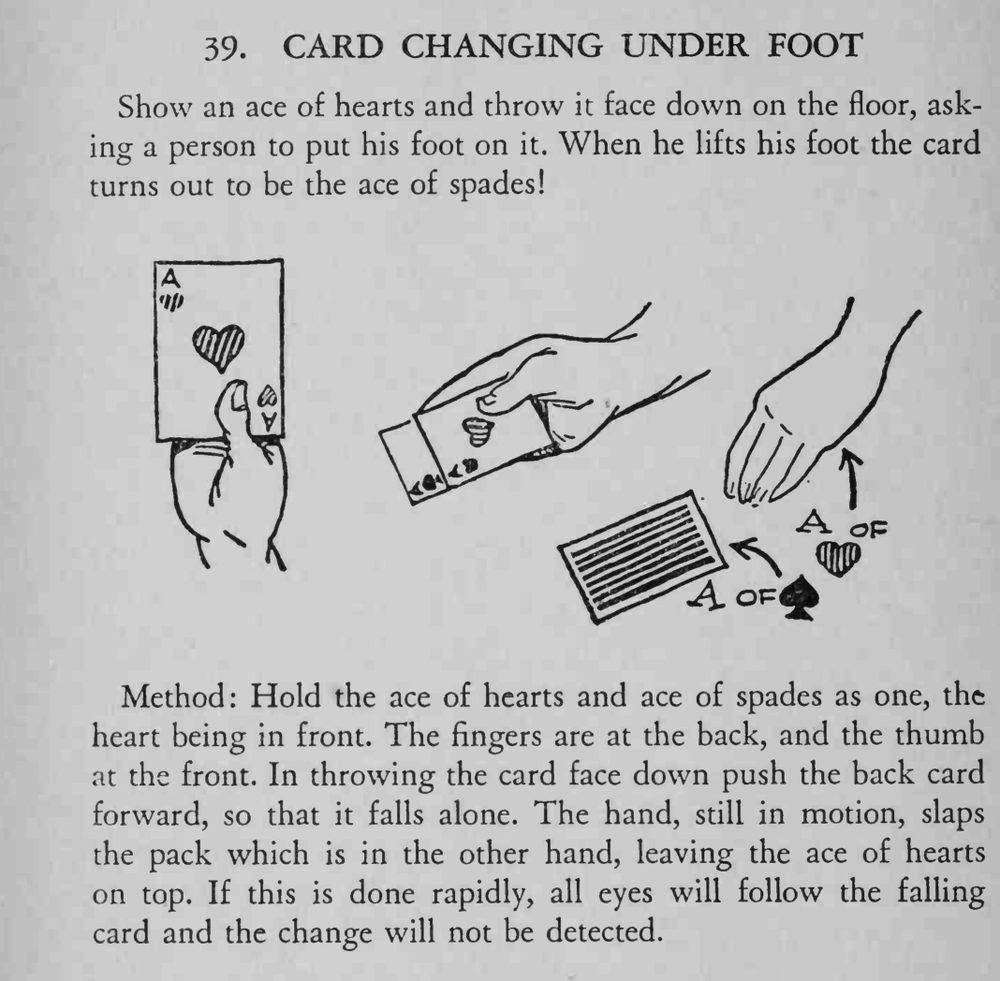

魔术师把红心 A 扔到地上，请观众踩住；观众抬脚一看，牌已经变成了黑桃 A。
扔牌和拍牌要一气呵成，手不能停。

Show an ace of hearts and throw it face down on the floor, asking a person to put his foot on it. When he lifts his foot the card turns out to be the ace of spades! Method: Hold the ace of hearts and ace of spades as one, the heart being in front. The fingers are at the back, and the thumb at the front. In throwing the card face down push the back card forward, so that it falls alone. The hand, still in motion, slaps the pack which is in the other hand, leaving the ace of hearts on top. If this is done rapidly, all eyes will follow the falling card and the change will not be detected.